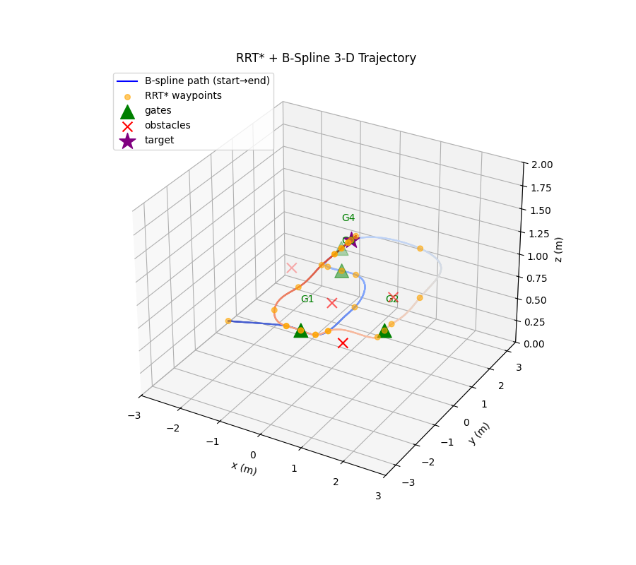
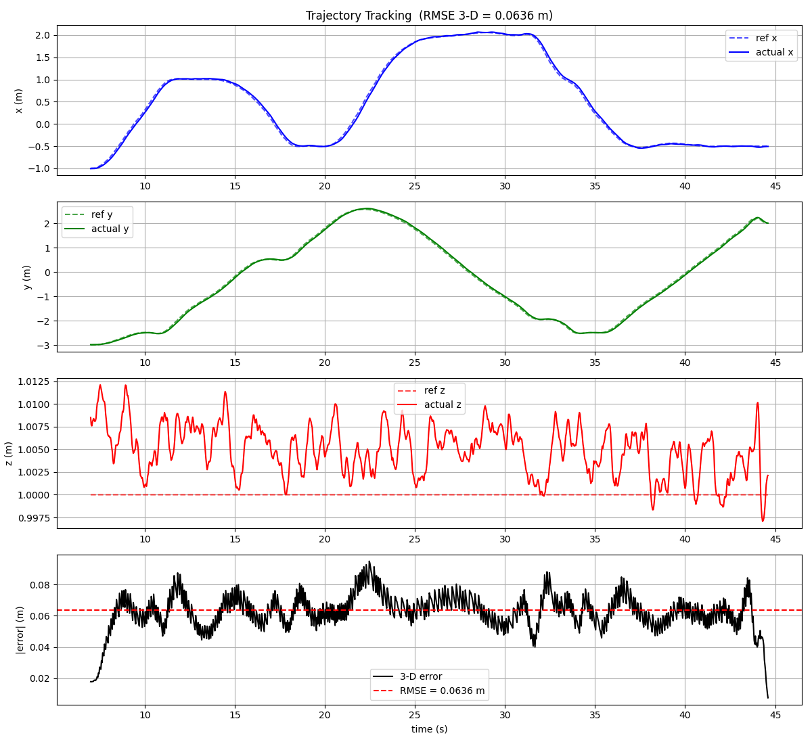

1.Task
Fly a Crazyflie nano-quadrotor through a course of gates, autonomously, in the right order. That decomposes into four problems: find a collision-free path through the gates, turn it into something a quadrotor can actually fly, follow it closed-loop, and make sure the geometry of "through the gate" is enforced rather than hoped for.
2.Global planning: Informed RRT*
The global planner is Informed RRT*: sampling-based, asymptotically optimal, with the informed subset-sampling trick focusing samples inside the ellipsoid that can still improve the current best path. Gate ordering is enforced by planning gate-to-gate, and virtual anchor points on either side of each gate plane force the path to approach and exit perpendicular to the gate, so the spline through it can't clip a gate post.
3.Trajectory smoothing: clamped B-splines
Raw RRT* output is a polyline; a quadrotor wants smooth derivatives. The waypoint path is refit as a degree-5 clamped B-spline: degree 5 for continuous acceleration and jerk, clamped so the trajectory hits the start and goal exactly. The spline is then arc-length parameterized so speed along the path is controlled independently of the spline's knot spacing.

4.Closed-loop following & hardware
The smoothed trajectory is tracked closed-loop, first in simulation and then on a real Crazyflie flying under Vicon motion capture. The same pipeline ran both; the sim-validated planner and follower transferred to hardware without structural changes.

5.Credits & report
Team project with Dejan Plavsic and Mohsen Movahedi. Full details in the technical report (PDF) ↗.